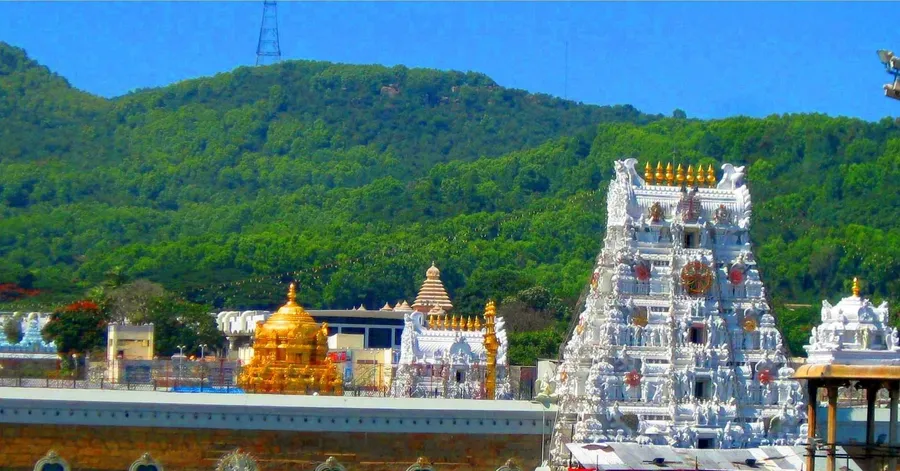
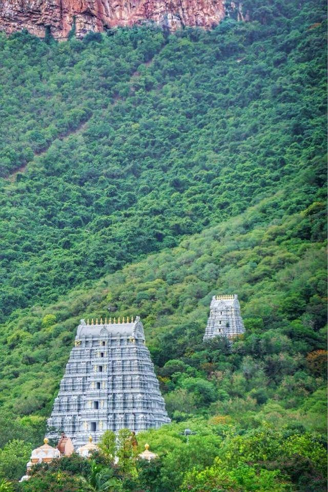
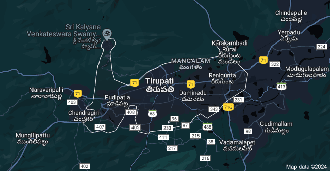
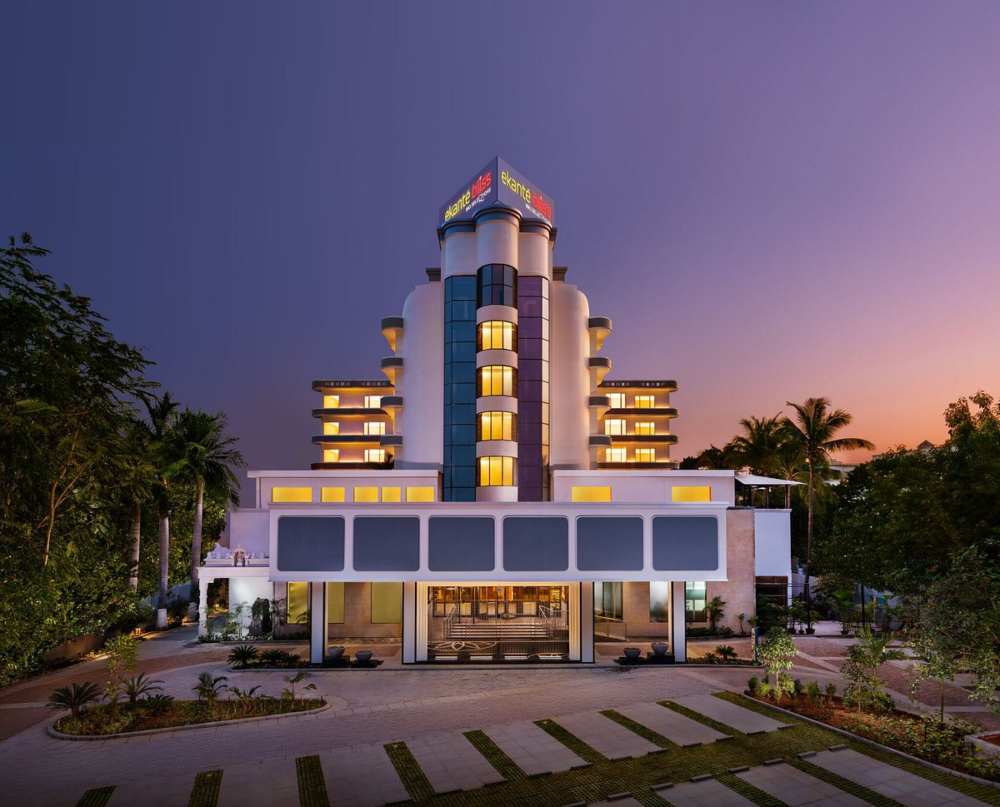
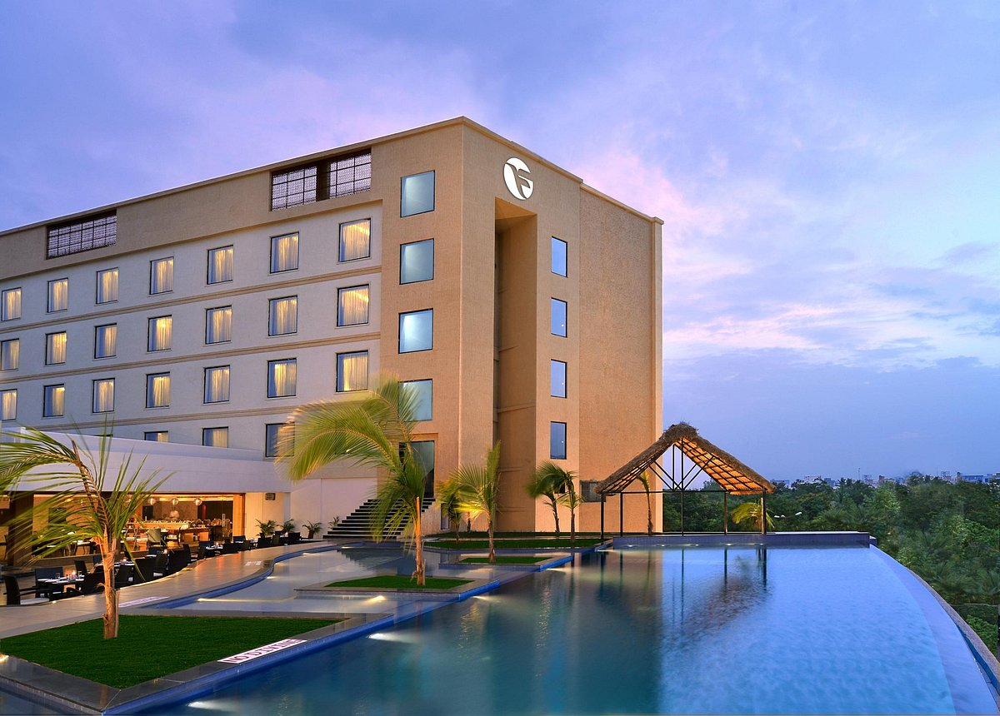
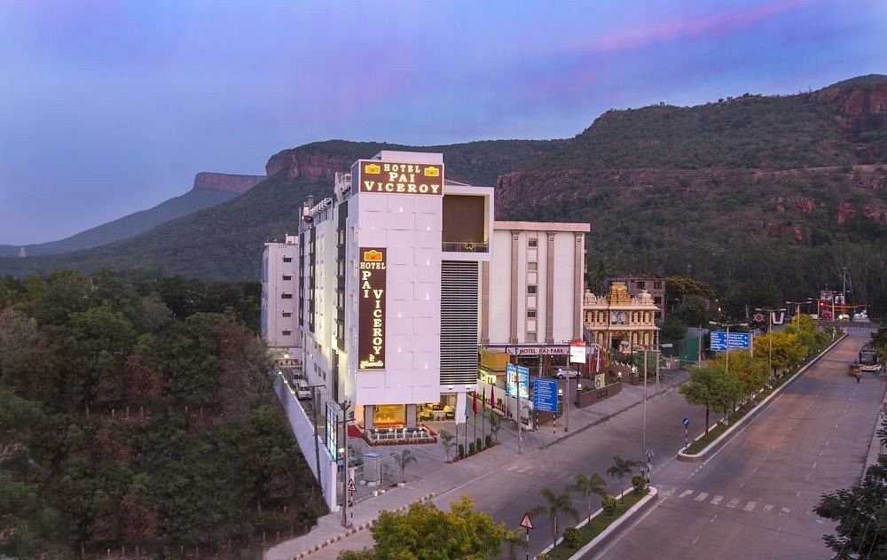
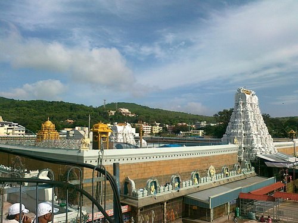
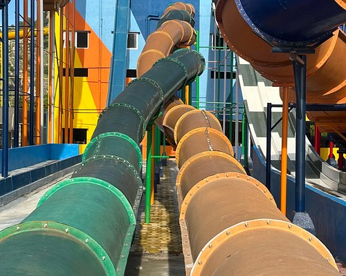
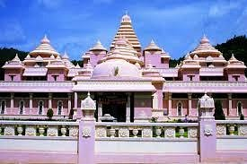

Tirupati is a city in the Indian state of Andhra Pradesh. Its Sri Venkateswara Temple sits atop one of the the 7 peaks of Tirumala Hills, attracting scores of Hindu pilgrims. Sri Venkateswara National Park, home to the temple, also contains the Sri Venkateswara Zoological Park with lions and primates. Nearby, next to a waterfall and cave believed to be sacred, Sri Kapileswara Swamy Temple is dedicated to Lord Shiva..

Hotel Ekante Bliss
Located in the heart of this iconic temple city, Ekante Bliss, Tirupati – IHCL SeleQtions, is a haven of elegance and comfort. The property offers a breathtaking perspective of the renowned temple and convenient access to landmarks and attractions around the holy city, granting it the unique advantage of tranquillity and proximity..

Fortune select Grand Ridge
Welcome to Fortune Select Grand Ridge, the only five star hotel in Tirupati. We are conveniently located at the intersection of Airport By-pass road and Tiruchanoor road, in a quiet 17 acre park-like setting, called Shilparamam. We are 1.5 km from city center, railway and bus stations. Grand Ridge is the only hotel that offers all five star luxuries at three star prices.

Pai Viceroy Hotel
See why so many travellers make Pai Viceroy Hotel their hotel of choice when visiting Tirupati. Providing an ideal mix of value, comfort and convenience, it offers a romantic setting with an array of amenities designed for travellers like you. For those interested in checking out popular landmarks while visiting Tirupati, Pai Viceroy Hotel is located a short distance from Vaikuntha Teertham (0.2 mi) and Sri Varadaraja Swamy Temple (0.7 mi).

Tirumala Temple
One of the holiest Hindu temples in the world, it is dedicated to Lord Venkateswara and visited by millions of devotees each year Tirumala is a census town in Chittoor district of the Indian state of Andhra Pradesh. The town is a part of Tirupati Urban Development Authority and located in Tirupati mandal of Tirupati revenue … .

Bluland Water Park
"Thrilling slides, refreshing pools, and a splash-tastic time! This water park delivers non-stop fun for all ages. Impeccable cleanliness and friendly staff enhance the overall experience. A perfect escape for a day of aquatic joy!".

Sri Venkateswara Museum
This museum is situated very near the Govindaraja perumal temple.When you come out of the temple through the south gate, you will see this museum.Rate collections of statue, very rare news about temples and the construction.Drawings of temple vimanas, paintings of different Lord forms are exhibited here.A person with good hunger to know about temples must surely visit this museum.